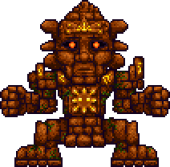

Голем призывается с помощью ящщерового элемента питания (их можно найти в сундуках внутри храма джунглей или выбить с ящеров) на алтаре ящеров в храме джунглей. Чтобы получить доступ к храму ящеров, вы должны убить Плантеру и открыть храм ящеров ключом, который с неё выпал.
В первой фазе Голем будет стрелять огненными шарами, бросаться в игрока кулаками и иногда прыгать. Когда у головы Голема остается меньше половины здоровья, она начнет стрелять лазерами. Вторая стадия наступает когда вы «убьете» голову Голема. После этого голова оторвется, начнет стрелять лазерами и будет летать над самим телом игнорируя любой урон. Кроме этого, Голем начнет быстрее двигаться. Босса в этой фазе можно уничтожить только убийством тела.